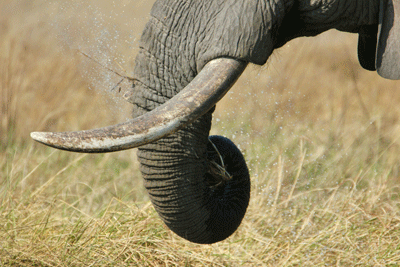

Background
Elephants are the largest living land animals. Three living species are currently recognised: the African
bush elephant (Loxodonta africana), the African forest elephant (L. cyclotis), and the Asian elephant
(Elephas maximus).
They are the only surviving members of the family Elephantidae and the order Proboscidea; extinct
relatives include mammoths and mastodons. Distinctive features of elephants include a long proboscis called
a trunk, tusks, large ear flaps, pillar-like legs, and tough but sensitive grey skin. The trunk is
prehensile, bringing food and water to the mouth and grasping objects. Tusks, which are derived from the incisor teeth,
serve both as weapons and as tools for moving objects and digging. The large ear flaps assist in maintaining
a constant body temperature as well as in communication. African elephants have larger ears and concave
backs, whereas Asian elephants have smaller ears and convex or level backs.
Elephants are scattered throughout sub-Saharan Africa, South Asia, and Southeast Asia and are found in
different habitats, including savannahs, forests, deserts, and marshes. They are herbivorous, and they stay
near water when it is accessible.
They are considered to be keystone species, due to their impact on their
environments. Elephants have a fission–fusion society, in which multiple family groups come together to
socialise.
Females (cows) tend to live in family groups, which can consist of one female with her calves or several
related females with offspring. The leader of a female group, usually the oldest cow, is known as the matriarch.
Males (bulls) leave their family groups when they reach puberty and may live alone or with other males.
Adult bulls mostly interact with family groups when looking for a mate. They enter a state of increased
testosterone and aggression known as musth, which helps them gain dominance over other males as well as
reproductive success. Calves are the centre of attention in their family groups and rely on their mothers
for as long as three years.
Elephants can live up to 70 years in the wild. They communicate by touch, sight, smell, and sound;
elephants use infrasound and seismic communication over long distances. Elephant intelligence has been
compared with that of primates and cetaceans. They appear to have self-awareness, and possibly show concern for dying and
dead individuals of their kind.
African bush elephants and Asian elephants are listed as endangered and African forest elephants as critically endangered by the
International Union for Conservation of Nature (IUCN). One of the biggest threats to elephant populations is the ivory trade, as the animals are poached for their ivory tusks. Other
threats to wild elephants include habitat destruction and conflicts with local people.
Elephants are used as working animals
in Asia. In the past, they were used in war; today, they are often controversially put on display in zoos,
or employed for entertainment in circuses. Elephants have an iconic status in human culture and have been
widely featured in art, folklore, religion, literature, and popular culture.


Evolution
Over 180 extinct members of order Proboscidea have been described. The earliest proboscideans, the African
Eritherium and Phosphatherium are known from the late Paleocene. The Eocene included Numidotherium,
Moeritherium, and Barytherium from Africa. These animals were relatively small and, some, like Moeritherium and Barytherium were probably
amphibious. Later on, genera such as Phiomia and Palaeomastodon arose; the latter likely inhabited more forested areas. Proboscidean
diversification changed little during the Oligocene.
One notable species of this epoch was Eritreum melakeghebrekristosi of the Horn of Africa, which may have been
an ancestor to several later species. A major event in proboscidean evolution was the collision of Afro-Arabia
with Eurasia, during the Early Miocene, around 18–19 million years ago, allowing proboscideans to disperse from their African homeland across
Eurasia and later, around 16–15 million years ago into North America across the Bering Land Bridge.
Proboscidean groups prominent during the Miocene include the deinotheres, along with the more advanced elephantimorphs, including mammutids
(mastodons), gomphotheres, amebelodontids (which includes the "shovel tuskers" like Platybelodon), choerolophodontids and stegodontids.
Around 10 million years ago, the earliest members of the family Elephantidae emerged in Africa, having originated from gomphotheres.
Elephantids are distinguished from earlier proboscideans by a major shift in the molar morphology to parallel lophs rather than the cusps of earlier
proboscideans, allowing them to become higher-crowned (hypsodont) and more efficient in consuming grass.
The Late Miocene saw major climactic changes, which resulted in the decline and extinction of many proboscidean
groups.
The earliest members of the modern genera of Elephantidae appeared during the latest Miocene–early Pliocene
around 5 million years ago. The elephantid
genera Elephas (which includes the living Asian elephant) and Mammuthus (mammoths) migrated out of Africa during
the late Pliocene, around 3.6 to 3.2 million years ago. Over the course of the Early Pleistocene, all
non-elephantid probobscidean genera outside of the
Americas became extinct with the exception of Stegodon, with gomphotheres dispersing into South America as part
of the Great American interchange, and
mammoths migrating into North America around 1.5 million years ago. At the end of the Early Pleistocene,
around 800,000 years ago the elephantid genus
Palaeoloxodon dispersed outside of Africa, becoming widely distributed in Eurasia. Proboscideans were
represented by around 23 species at the beginning of the Late Pleistocene.
Proboscideans underwent a dramatic decline during the Late Pleistocene as part of the Late Pleistocene
extinctions
of most large mammals globally, with all remaining non-elephantid proboscideans (including Stegodon, mastodons,
and the American gomphotheres Cuvieronius
and Notiomastodon) and Palaeoloxodon becoming extinct, with mammoths only surviving in relict populations on
islands around the Bering Strait into the
Holocene, with their latest survival being on Wrangel Island, where they persisted until around 4,000 years ago.
Over the course of their evolution, probobscideans grew in size. With that came longer limbs and wider feet with
a more digitigrade stance, along with a
larger head and shorter neck. The trunk evolved and grew longer to provide reach. The number of premolars,
incisors, and canines decreased, and the cheek
teeth (molars and premolars) became longer and more specialised. The incisors developed into tusks of different
shapes and sizes. Several species
of proboscideans became isolated on islands and experienced insular dwarfism, some dramatically reducing in body
size, such as the 1 m (3 ft 3 in)
tall dwarf elephant species Palaeoloxodon falconeri.
Anatomy
Elephants are the largest living terrestrial animals. Some species of the extinct elephant genus
Palaeoloxodon considerably exceeded modern elephants in size making them among the largest land mammals
ever. The skeleton is made up of 326–351 bones. The vertebrae are connected by tight joints, which limit the
backbone's flexibility. African elephants have 21 pairs of ribs, while Asian elephants have 19 or 20 pairs. The
skull contains air cavities (sinuses) that reduce the weight of the skull while maintaining overall strength.
These cavities give the inside of the skull a honeycomb-like appearance. By contrast, the lower jaw is dense.
The cranium is particularly large and provides enough room for the attachment of muscles to support the entire
head. The skull is built to withstand great stress, particularly when fighting or using the tusks. The
brain is surrounded by arches in the skull, which serve as protection. Because of the size of the head, the
neck is relatively short to provide better support. Elephants are homeotherms and maintain their average
body temperature at ~ 36 °C (97 °F), with a minimum of 35.2 °C (95.4 °F) during the cool season, and a maximum of
38.0 °C (100.4 °F) during the hot dry season.
EARS & EYES

Elephant ear flaps, or pinnae, are 1–2 mm (0.039–0.079 in) thick in the middle with a thinner tip and
supported by a thicker base. They contain numerous blood vessels called capillaries. Warm blood flows into
the capillaries, releasing excess heat into the environment. This effect is increased by flapping the ears
back and forth. Larger ear surfaces contain more capillaries, and more heat can be released. Of all the
elephants, African bush elephants live in the hottest climates and have the largest ear flaps. The
ossicles are adapted for hearing low frequencies, being most sensitive at 1 kHz.
Lacking a lacrimal apparatus (tear duct), the eye relies on the harderian gland in the orbit to keep it
moist. A durable nictitating membrane shields the globe. The animal's field of vision is compromised by the
location and limited mobility of the eyes. Elephants are dichromats and they can see well in dim
light but not in bright light.
TRUNK

The elongated and prehensile trunk, or proboscis, consists of both the nose and upper lip, which fuse in
early fetal development.
This versatile appendage contains up to 150,000 separate muscle fascicles, with no bone and little fat.
These paired muscles consist
of two major types: superficial (surface) and internal. The former are divided into dorsal, ventral, and
lateral muscles, while the
latter are divided into transverse and radiating muscles. The muscles of the trunk connect to a bony opening
in the skull. The nasal
septum consists of small elastic muscles between the nostrils, which are divided by cartilage at the base. A
unique proboscis
nerve – a combination of the maxillary and facial nerves – lines each side of the appendage.
As a muscular hydrostat, the trunk moves through finely controlled muscle contractions, working both with
and against each other.
Using three basic movements: bending, twisting, and longitudinal stretching or retracting, the trunk has
near unlimited flexibility.
Objects grasped by the end of the trunk can be moved to the mouth by curving the appendage inward. The trunk
can also bend at different
points by creating stiffened "pseudo-joints". The tip can be moved in a way similar to the human hand. The
skin is more elastic on
the dorsal side of the elephant trunk than underneath; allowing the animal to stretch and coil while
maintaining a strong grasp.
The African elephants have two finger-like extensions at the tip of the trunk that allow them to pluck small
food. The Asian elephant
has only one and relies more on wrapping around a food item. Asian elephant trunks have better motor
coordination.
The trunk's extreme flexibility allows it to forage and wrestle other elephants with it. It is powerful
enough to lift up to 350 kg (770 lb),
but it also has the precision to crack a peanut shell without breaking the seed. With its trunk, an elephant
can reach items up to 7 m (23 ft)
high and dig for water in the mud or sand below. It also uses it to clean itself. Individuals may show
lateral preference when grasping with
their trunks: some prefer to twist them to the left, others to the right.[46] Elephant trunks are capable of
powerful siphoning. They can expand
their nostrils by 30%, leading to a 64% greater nasal volume, and can breathe in almost 30 times faster than
a human sneeze, at
over 150 m/s (490 ft/s). They suck up water, which is squirted into the mouth or over the body. The trunk of
an adult Asian elephant
is capable of retaining 8.5 L (2.2 US gal) of water. They will also sprinkle dust or grass on themselves.
When underwater, the elephant uses
its trunk as a snorkel.
The trunk also acts as a sense organ. Its sense of smell may be four times greater than a bloodhound's nose.
The infraorbital nerve,
which makes the trunk sensitive to touch, is thicker than both the optic and auditory nerves. Whiskers grow
all along the trunk, and are
particularly packed at the tip, where they contribute to its tactile sensitivity. Unlike those of many
mammals, such as cats and rats, elephant
whiskers do not move independently ("whisk") to sense the environment; the trunk itself must move to bring
the whiskers into contact with nearby
objects. Whiskers grow in rows along each side on the ventral surface of the trunk, which is thought to be
essential in helping elephants balance
objects there, whereas they are more evenly arranged on the dorsal surface. The number and patterns of
whiskers are distinctly different between
species.
Damaging the trunk would be detrimental to an elephant's survival, although in rare cases, individuals have
survived with shortened ones.
One trunkless elephant has been observed to graze using its lips with its hind legs in the air and balancing
on its front knees. Floppy
trunk syndrome is a condition of trunk paralysis recorded in African bush elephants and involves the
degeneration of the peripheral nerves
and muscles. The disorder has been linked to lead poisoning.
TEETH
Elephants usually have 26 teeth: the incisors, known as the tusks; 12 deciduous premolars; and 12 molars.
Unlike most mammals, teeth are not replaced by new ones emerging from the jaws vertically. Instead, new
teeth start at the back of the mouth and push out the old ones. The first chewing tooth on each side of the
jaw falls out when the elephant is two to three years old. This is followed by four more tooth replacements
at the ages of four to six, 9–15, 18–28, and finally in their early 40s. The final (usually sixth) set must
last the elephant the rest of its life. Elephant teeth have loop-shaped dental ridges, which are more
diamond-shaped in African elephants.
TUSKS
The tusks of an elephant are modified second incisors in the upper jaw. They replace deciduous milk teeth at
6–12 months of age and keep growing at about 17 cm (7 in) a year. As the tusk develops, it is topped with
smooth, cone-shaped enamel that eventually wanes. The dentine is known as ivory and has a cross-section of
intersecting lines, known as "engine turning", which create diamond-shaped patterns. Being living tissue,
tusks are fairly soft and about as dense as the mineral calcite. The tusk protrudes from a socket in the
skull, and most of it is external. At least one-third of the tusk contains the pulp, and some have nerves
that stretch even further. Thus, it would be difficult to remove it without harming the animal. When
removed, ivory will dry up and crack if not kept cool and wet. Tusks function in digging, debarking,
marking, moving objects, and fighting.
Elephants are usually right- or left-tusked, similar to humans, who are typically right- or left-handed. The
dominant, or "master" tusk, is typically more worn down, as it is shorter and blunter. For African
elephants, tusks are present in both males and females and are around the same length in both sexes,
reaching up to 300 cm (9 ft 10 in), but those of males tend to be more massive. In the Asian
species, only the males have large tusks. Female Asians have very small tusks, or none at all. Tuskless
males exist and are particularly common among Sri Lankan elephants. Asian males can have tusks as long
as Africans', but they are usually slimmer and lighter; the largest recorded was 302 cm (9 ft 11 in) long
and weighed 39 kg (86 lb). Hunting for elephant ivory in Africa and Asia has resulted in an
effective selection pressure for shorter tusks and tusklessness.
SKIN
An elephant's skin is generally very tough, at 2.5 cm (1 in) thick on the back and parts of the head. The
skin around the mouth, anus, and inside of the ear is considerably thinner. Elephants are typically grey,
but African elephants look brown or reddish after rolling in coloured mud. Asian elephants have some patches
of depigmentation, particularly on the head. Calves have brownish or reddish hair, with the head and back
being particularly hairy. As elephants mature, their hair darkens and becomes sparser, but dense
concentrations of hair and bristles remain on the tip of the tail and parts of the head and genitals.
Normally, the skin of an Asian elephant is covered with more hair than its African counterpart. Their
hair is thought to help them lose heat in their hot environments.
Although tough, an elephant's skin is very sensitive and requires mud baths to maintain moisture and
protection from burning and insect bites. After bathing, the elephant will usually use its trunk to blow
dust onto its body, which dries into a protective crust. Elephants have difficulty releasing heat through
the skin because of their low surface-area-to-volume ratio, which is many times smaller than that of a
human. They have even been observed lifting up their legs to expose their soles to the air. Elephants
only have sweat glands between the toes, but the skin allows water to disperse and evaporate, cooling
the animal. In addition, cracks in the skin may reduce dehydration and allow for increased thermal
regulation in the long term.
LEGS, LOCOMOTION, & POSTURE
To support the animal's weight, an elephant's limbs are positioned more vertically under the body than in
most other mammals. The long bones of the limbs have cancellous bones in place of medullary cavities. This
strengthens the bones while still allowing haematopoiesis (blood cell creation). Both the front and hind
limbs can support an elephant's weight, although 60% is borne by the front. The position of the limbs
and leg bones allows an elephant to stand still for extended periods of time without tiring.
Elephants are incapable of turning their manus as the ulna and radius of the front legs are secured in
pronation. Elephants may also lack the pronator quadratus and pronator teres muscles or have very small ones. The
circular feet of an elephant have soft tissues, or "cushion pads" beneath the manus or pes, which allow them
to bear the animal's great mass. They appear to have a sesamoid, an extra "toe" similar in placement to
a giant panda's extra "thumb", that also helps in weight distribution. As many as five toenails can be
found on both the front and hind feet.
Elephants can move both forward and backward, but are incapable of trotting, jumping, or galloping. They can
move on land only by walking or ambling: a faster gait similar to running. In walking, the legs act
as pendulums, with the hips and shoulders moving up and down while the foot is planted on the ground. The
fast gait does not meet all the criteria of running, since there is no point where all the feet are off the
ground, although the elephant uses its legs much like other running animals, and can move faster by
quickening its stride.
Fast-moving elephants appear to 'run' with their front legs, but 'walk' with their
hind legs and can reach a top speed of 25 km/h (16 mph). At this speed, most other quadrupeds are well into
a gallop, even accounting for leg length. Spring-like kinetics could explain the difference between the
motion of elephants and other animals. The cushion pads expand and contract, and reduce both the
pain and noise that would come from a very heavy animal moving. Elephants are capable swimmers: they can
swim for up to six hours while completely waterborne, moving at 2.1 km/h (1 mph) and traversing up to 48 km
(30 mi) continuously.
INTERNAL SYSTEM

The brain of an elephant weighs 4.5–5.5 kg (10–12 lb) compared to 1.6 kg (4 lb) for a human brain. It is the
largest of all
terrestrial mammals. While the elephant brain is larger overall, it is proportionally smaller than the human
brain. At birth,
an elephant's brain already weighs 30–40% of its adult weight. The cerebrum and cerebellum are well
developed, and the temporal
lobes are so large that they bulge out laterally.[78] Their temporal lobes are proportionally larger than
those of other animals,
including humans. The throat of an elephant appears to contain a pouch where it can store water for later
use. The larynx
of the elephant is the largest known among mammals. The vocal folds are anchored close to the epiglottis
base. When comparing an
elephant's vocal folds to those of a human, an elephant's are proportionally longer, thicker, with a greater
cross-sectional area.
In addition, they are located further up the vocal tract with an acute slope.
The heart of an elephant weighs 12–21 kg (26–46 lb). Its apex has two pointed ends, an unusual trait among
mammals. In addition, the
ventricles of the heart split towards the top, a trait also found in sirenians.[81] When upright, the
elephant's heart beats around
28 beats per minute and actually speeds up to 35 beats when it lies down. The blood vessels are thick and
wide and can hold up
under high blood pressure. The lungs are attached to the diaphragm, and breathing relies less on the
expanding of the ribcage.
Connective tissue exists in place of the pleural cavity. This may allow the animal to deal with the pressure
differences when its
body is underwater and its trunk is breaking the surface for air. Elephants breathe mostly with the trunk
but also with the mouth.
They have a hindgut fermentation system, and their large and small intestines together reach 35 m (115 ft)
in length. Less than half of an
elephant's food intake gets digested, despite the process lasting a day. An elephant's kidneys can produce
more than 50 litres of urine per day.